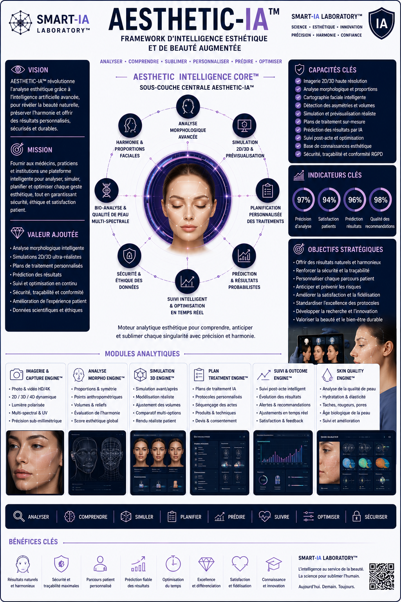

SKIN DIAGNOSTIC ANALYTICS™
Module dédié à l’analyse intelligente des structures cutanées et des paramètres dermiques.
- Analyse des couches cutanées
- Lecture hydratation et texture
- Détection des irrégularités
- Analyse vieillissement cutané
Advanced Strategic Artificial Intelligence Research
___
Une architecture de frameworks IA conçue pour transformer
les données complexes en décisions exploitables.
AESTHETIC-IA™ transforme l’analyse esthétique traditionnelle en plateforme intelligente de lecture cutanée, d’interprétation morphologique et de projection dermo-esthétique.
En combinant imagerie haute résolution, segmentation faciale, analyse cutanée, biométrie morphologique et intelligence artificielle analytique, AESTHETIC-IA™ permet une lecture avancée des structures esthétiques.
Le framework est conçu pour les centres esthétiques, les laboratoires dermo-cosmétiques, les cabinets spécialisés et les environnements d’analyse clinique avancée.
Une synthèse visuelle du framework AESTHETIC-IA™, de sa sous-couche Aesthetic Intelligence Core™, de ses modules d’analyse morphologique, de simulation esthétique et d’optimisation dermo-esthétique intelligente.

DERMO-SKIN ANALYTICS™ constitue le moteur analytique de lecture dermo-esthétique et morphologique intelligente.
Cette sous-couche fusionne les données cutanées, les structures faciales, les variations pigmentaires et les marqueurs esthétiques afin de produire une lecture avancée des états dermiques.
Module dédié à l’analyse intelligente des structures cutanées et des paramètres dermiques.
Module de lecture morphologique et projection esthétique intelligente.
DERMO-SKIN ANALYTICS™
Dermo-esthétique • Morphologie • Analyse • Peau • Biométrie • Projection